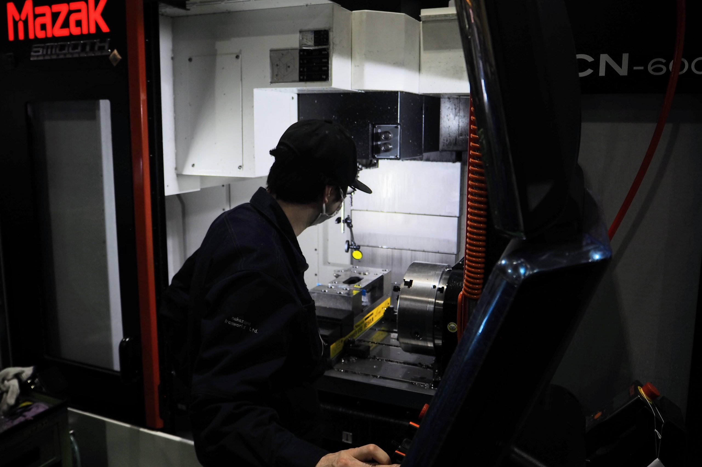
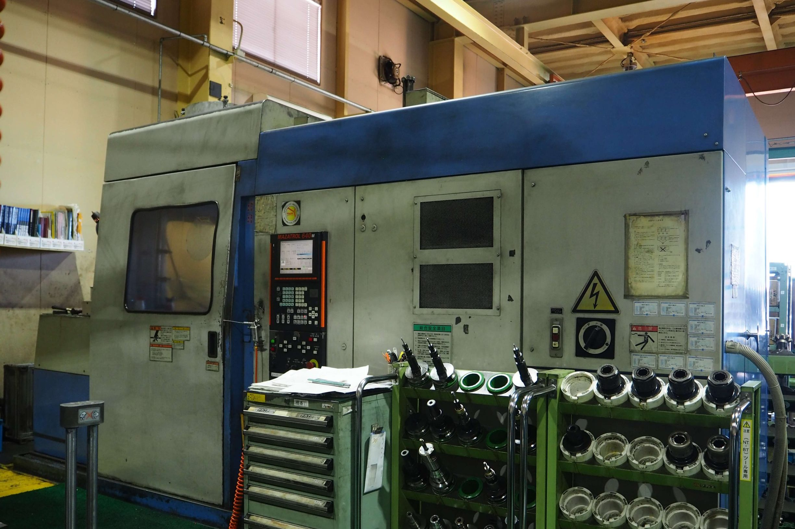
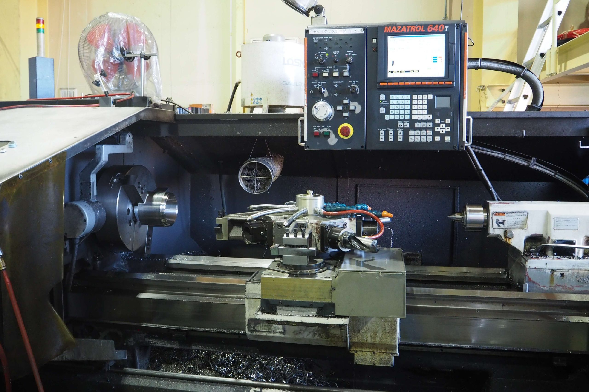
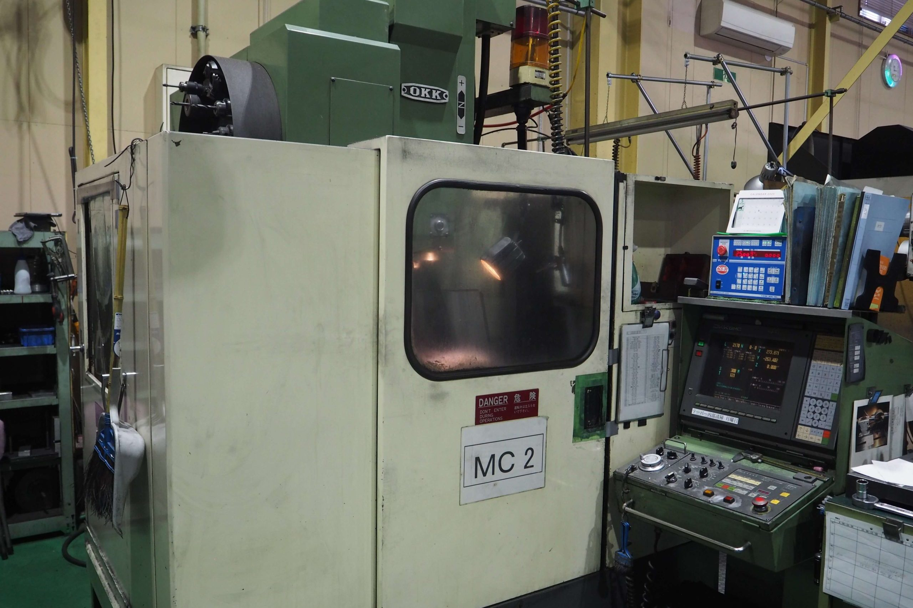
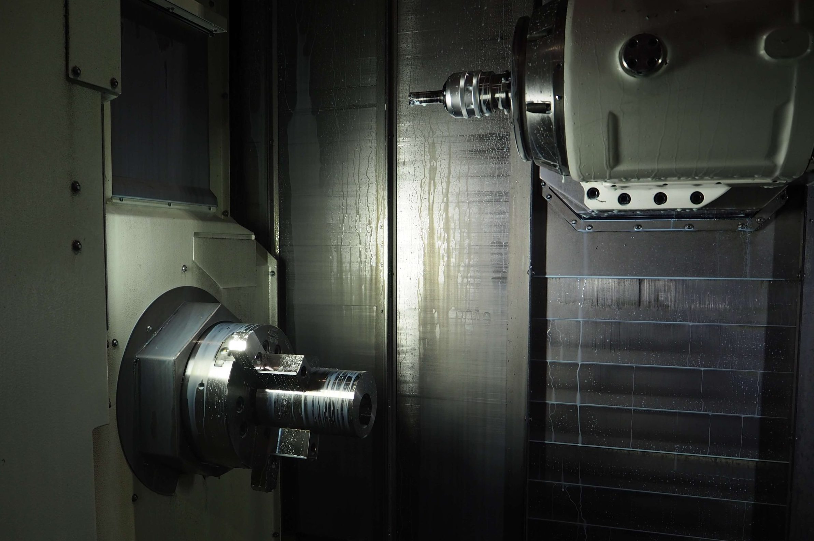
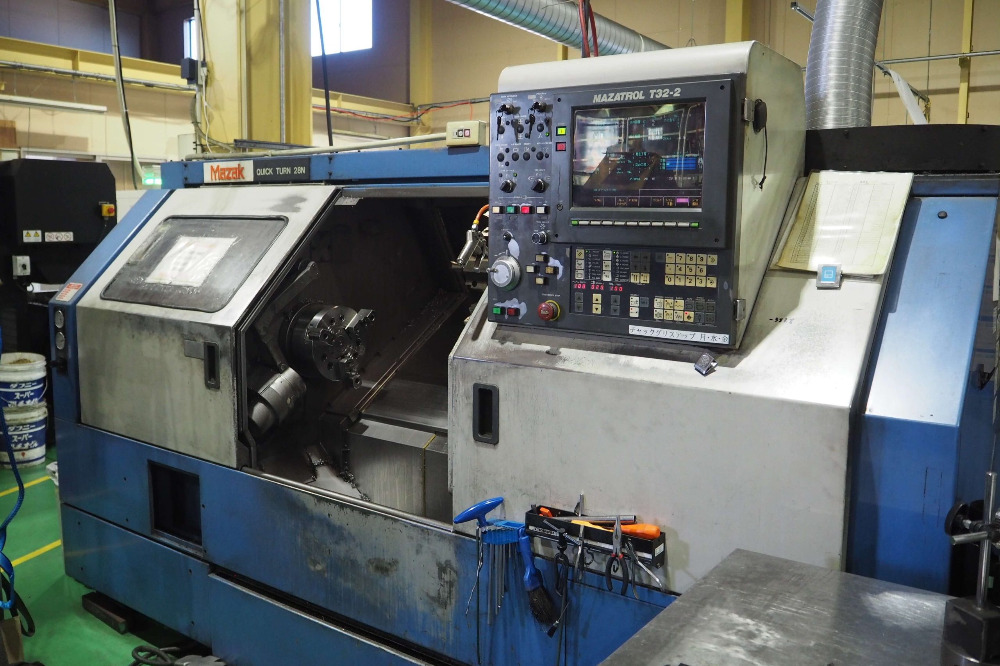
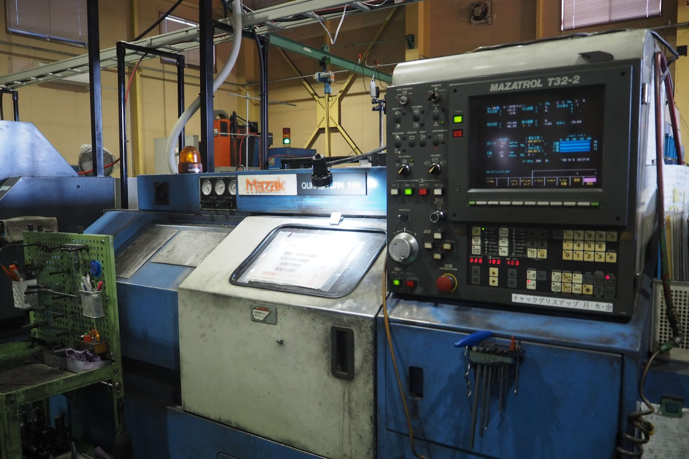
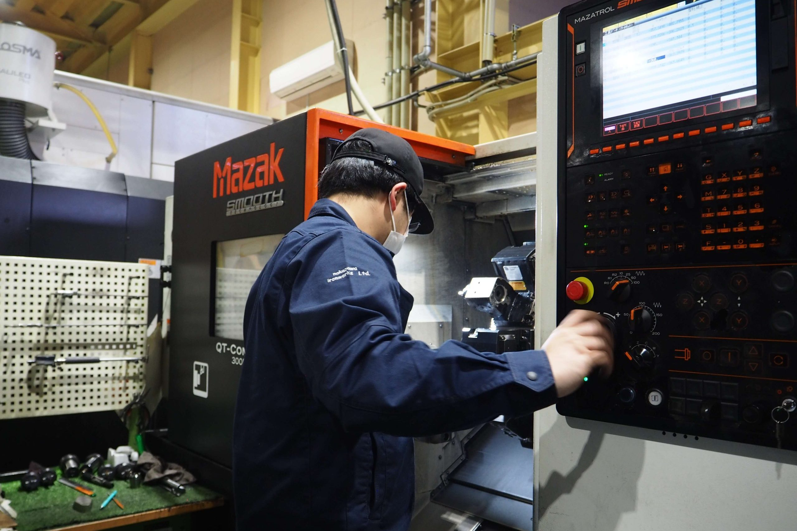
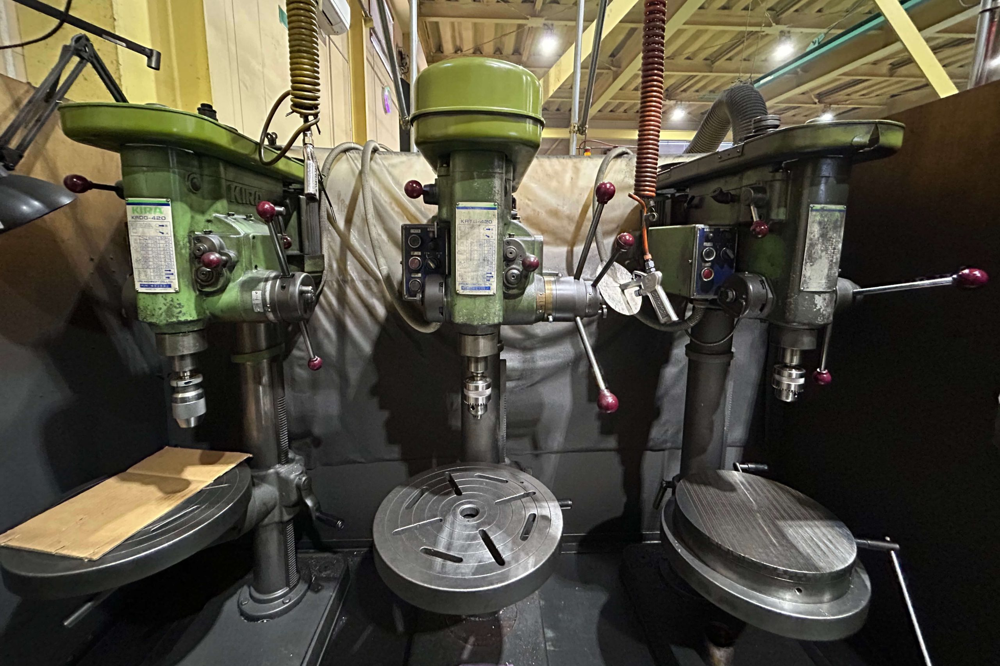
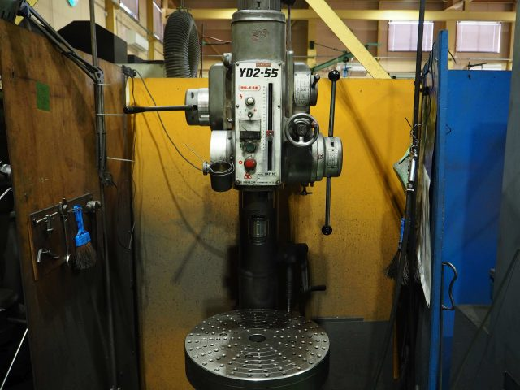

設備紹介
最新鋭の設備で高品質を実現
中澤鉄工所では、マザック、OKKをはじめとする最新鋭の工作機械を多数保有。
豊富な設備ラインナップにより、多様な加工ニーズに対応いたします。
マシニングセンタ

マザック AJV25-405N
- ストローク
- X:1050 Y:530 Z:510
- 主軸回転数
- 12,000 rpm
- 台数
- 1台

マザック VCN-600
- ストローク
- X:1200 Y:600 Z:600
- 主軸回転数
- 10,000 rpm
- 台数
- 1台

マザック H15
- ストローク
- X:560 Y:510 Z:510
- 主軸回転数
- 10,000 rpm
- 台数
- 1台

マザック M5
- ストローク
- X:510 Y:410 Z:410
- 主軸回転数
- 8,000 rpm
- 台数
- 1台

マザック VQC15
- ストローク
- X:406 Y:305 Z:330
- 主軸回転数
- 12,000 rpm
- 台数
- 1台

OKK PCV40
- ストローク
- X:400 Y:300 Z:300
- 主軸回転数
- 10,000 rpm
- 台数
- 1台
NC旋盤

マザック INTEGREX200
- 最大加工径
- φ550
- 最大加工長
- 1,020mm
- 台数
- 1台

マザック INTEGREX i-300
- 最大加工径
- φ658
- 最大加工長
- 1,524mm
- 台数
- 1台

マザック QT28
- 最大加工径
- φ350
- 最大加工長
- 500mm
- 台数
- 3台

マザック QT18
- 最大加工径
- φ250
- 最大加工長
- 350mm
- 台数
- 2台

マザック QT-COMPACT 300MY
- 最大加工径
- φ300
- 最大加工長
- 350mm
- 台数
- 1台

滝澤 TAL460
- 最大加工径
- φ280
- 最大加工長
- 465mm
- 台数
- 2台
汎用機

オークマ 汎用フライス
- テーブルサイズ
- 1,350×300mm
- 主軸
- No.50
- 台数
- 1台

吉田 YUD-540 ラジアルボール盤
- 主軸端～ベース
- 1,300mm
- アーム旋回
- 360°
- 台数
- 1台

キラ KRT-420 ラジアルボール盤
- 主軸端～ベース
- 1,000mm
- アーム旋回
- 360°
- 台数
- 1台
その他の設備
測定機器
- 三次元測定機
- 表面粗さ測定機（東京精密）
- 各種測定器具
周辺機器
- コンプレッサー（最新設備）
- クレーン設備
- 各種治具・工具
CAD/CAM
- 3D CAD/CAMシステム
- 加工シミュレーション
- プログラム作成支援
設備を活用した高品質な加工
豊富な設備と熟練の技術で、お客様のご要望にお応えします。
加工のご相談はお気軽にお問い合わせください。